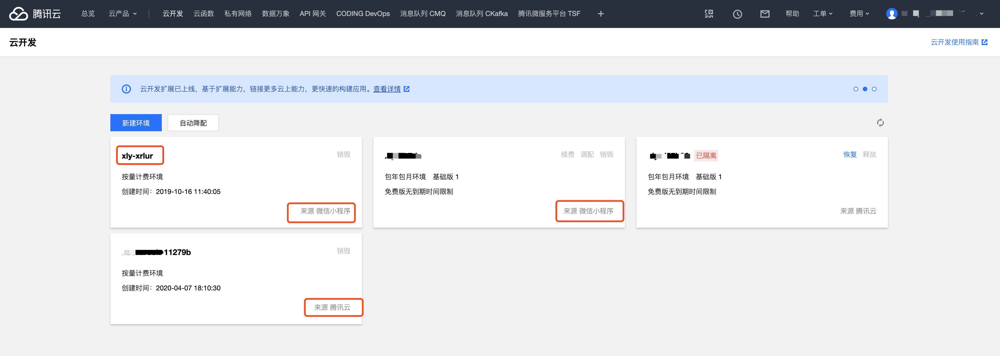
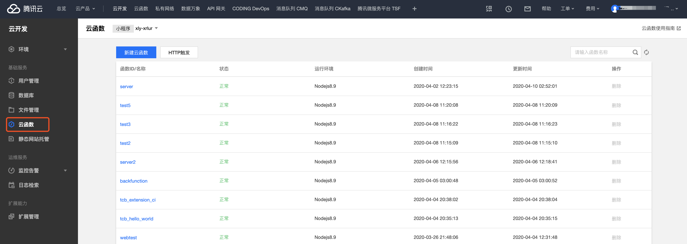

14 云开发资源管理
管理小程序云开发资源如数据库、存储、云函数的方式有很多，并不局限于微信开发者工具自带的云开发控制台。借助于云开发的Web端SDK、服务端SDK、管理端SDK、Cloudbase CLI以及HTTP API等，我们在本地电脑、服务器、Web网页、其他小程序内以及其他更多语言更多平台对云开发的资源进行管理。
14.1 云开发资源管理
14.1.1 开发人员的工具链
1、通过云开发网页后台管理云开发资源
我们可以登录腾讯云官网的 云开发后台管理，选择使用微信公众号登录，然后用该小程序管理员的微信扫描二维码，就可以在网页控制台里看到我们使用微信开发者工具创建的小程序云开发资源了。 
在这里可以管理小程序云开发的数据库、文件（存储）、云函数、监控告警、日志检索以及环境设置，也可以对云开发资源的服务进行续费，是一个完全可以替代云开发控制台的可视化管理工具。

腾讯云的这个云开发网页控制台相比开发者工具的控制台来说，功能更多更全面，很多新的功能也是会先发布在这里，比如：
- 静态网站托管：可以将hexo、vuepress、hugo等生成的静态博客、自己创建的静态网页网站托管到云开发环境里；
- 文件存储的缓存设置：缓存过期配置是一套针对用户文件的缓存策略，可降低CDN回源率；
- 云存储安全规则：
- 用户管理的登录设置：跨多端必不可少的功能，支持自定义登录、微信公众平台、微信开放平台以及匿名登录等；
- 云函数的HTTP 触发：HTTP 触发是云开发为开发者提供的 HTTP 访问服务，让开发者可以通过 HTTP 访问到自己的云开发资源。
- 私有网络，是一块在腾讯云上自定义的逻辑隔离网络空间，可以为云服务器、云数据库等资源构建逻辑隔离的、用户自定义配置的网络空间，以提升用户云上资源的安全性，并满足不同的应用场景需求；
- 云函数除了支持Nodejs还支持php，之后可能会增加更多的编程语言；
- 可以按资源包购买云环境的资源，开启按量付费之后，购买资源包更划算；
- 云开发环境的自动降配：云开发环境到期后若满足条件，系统将自动为您降为免费版环境，避免存储的资源因付费不及时而被清空
- 拓展能力：支持图像安全审核、图像标签、图像处理、图像盲水印等，而且拓展能力还在持续添加中
2、跨云开发环境进行管理
如果你开通了多个云开发环境（小程序云开发环境、Web端云开发环境等），也就有了多个云开发资源环境，那我们是否可以在A小程序的云函数里调用B小程序的云开发资源呢？当然可以，通过tcb-admin-node这个依赖就能很方便的实现。
tcb-admin-node也就是云开发的服务端SDK，让你可以在服务端（如腾讯云云函数或 CVM 等）使用 Nodejs 服务访问 云开发 的服务，也就是服务端SDK是云开发环境必备的一个依赖。在我们给云函数安装wx-server-sdk时就已经同时安装了该依赖，也就是我们无需再安装就可以直接用它来实现跨云开发环境来调用资源。
比如我们可以在A小程序的云函数里填入B小程序的secretId和secretKey以及环境ID，这里的secretId和secretKey，
- 可以填写B小程序的appid和key，这个在B小程序的控制台就可以找到，因为小程序云开发的环境可以创建两个，所以我们可以通过填写环境ID来确定是哪个环境；
- 你也可以腾讯云 API 固定密钥对，腾讯云密钥对获取，这个密钥对会管理该账号下的所有云开发环境，我们可以通过填写环境ID来确实是哪个环境
- 如果不填写secretId和secretKey，就表示初始化的是A小程序的云开发环境了。
const cloud = require('wx-server-sdk')
cloud.init({
secretId: 'xxxxx',
secretKey: 'xxxx',
env: 'xxx'
})
服务端SDK 也就是tcb-admin-node的用法，与小程序云函数端(服务端)的用法是一致的。该依赖更多信息可以通过阅读在Github上的技术文档来了解。
tcb-admin-node是云开发Nodejs的服务端SDK，而云开发也在不断支持更多的编程语言，比如php，而tcb-php-sdk则是云开发php语言的服务端SDK。
3、通过CLI工具来管理云开发资源
CloudBase CLI 是一个开源的命令行界面交互工具，用于帮助用户快速、方便的部署项目，管理云开发资源。对于开发人员来说，我们还可以通过cloudbase-cliCLI工具使用命令行对云开发资源进行管理。
如果你想使用Visual Studio Code在电脑本地来开发小程序和进行Web端云开发，可以使用Cloudbase Cli命令行工具来管理云开发的环境。
- 云开发环境的创建、环境配置的创建、更改环境登录方式、展示环境信息；
- 云函数列表展示、下载、部署、删除、更新代码、更新配置、拷贝云函数、打印云函数日志、触发云函数；
- 文件存储文件列表、文件临时访问地址、文件信息、文件权限的获取与设置、文件/文件夹的上传、删除、列表获取、信息获取；
- 静态网站的部署、删除
- HTTP Service的创建、删除、绑定、解绑、查询等
在电脑本地部署Nodejs环境，结合VS Code编辑器，Cloudbase CLI是一个可以取代微信开发者工具来做跨端云开发的重要工具，当然小程序和网页的一些与账号有关调试还是离不开微信开发者工具。
14.1.2 云开发后台管理系统的开发
我们应该如何让市场、运营、产品等来管理云开发的资源（如添加商品、发表文章等），通常我们需要搭建一个后台，便于不懂代码的人员来进行可视化管理，尽管我们可以把这个后台直接搭建在小程序里面，但是PC端的后台可能更加方便一些。
1、cloudbase-manager-node
cloudbase-manager-node是云开发的管理端SDK，它支持开发者通过接口形式对云开发提供的云函数、数据库、文件存储等资源进行创建、管理、配置等操作。
相比于云开发的服务端SDK，管理端SDK在管理云开发环境的资源上功能更加丰富；使用管理端SDK可以在本地电脑、Linux、Windows等服务器里搭建云开发环境的管理后台。我们仍然可以把管理端sdk cloudbase-manager-node引入到云函数，取得一些服务端sdk（wx-server-sdk）没有的能力，比如：
- 检查集合是否存在以及删除集合 ，通过checkCollectionExists('')接口检查集合是否存在，与创建集合结合起来使用，可以说是天作之合；管理吨SDK也可以deleteCollection('')删除集合；
- 操作索引 ，更新索引，判断索引是否存在，获取索引的信息，索引的命中次数、大小；
- 导入导出数据 ，将对象存储里的csv 或 json文件导入到数据库，也可以把数据库里的数据导出到csv 或 json文件，并能获取导入导出是否成功；
- 文件夹操作 ，上传或删除文件夹，获取文件夹里所有文件的信息，获取并云存储的权限；
- 操作云函数，获取云函数列表，创建和删除云函数，更新云函数的代码和配置，创建和删除云函数的触发器；
- 创建发布层Layer ，通过Layer，同一个账号内的云函数可以复用代码块，跨账号可以共享代码块；
- 操作安全规则 ，不仅可以查看数据库和云存储的安全规则，还能修改数据库和云存储的安全规则；
tcb-php-sdk是云开发php语言的服务端SDK，那与之相应的，tcb-manager-php是云开发php语言的管理端SDK。
2、Web端SDK
云开发同样适用于网站开发，Web 端是云开发中针对网站应用的统称，包含以下几个场景：普通网站应用（PC 端）、移动页面或者 H5 网页、公众号网页。如果你想将云开发这种免服务器免运维的开发理念和方式贯彻到web端，也可以直接把小程序云开发的环境切换到按量付费，那这个环境就可以成为web端开发的环境，实现一云多端，不需额外购置服务器就能来在网页Web端来管理小程序云开发环境里的资源。在后面我们也会简单介绍一下Web端云开发的相关内容。
3、云接入(HTTP触发)
云接入是云开发基于云函数之上为开发者提供的HTTP访问服务，开发者可以轻松使用 POST、PUT、GET、DELETE等方法通过 HTTP 请求访问到云开发环境内的全部资源，而不需要使用Web端 SDK，后面也会具体介绍。
4、使用HTTP API来管理云开发资源
开发人员还可以使用HTTP API搭建一个网页后台，HTTP API适用于所有平台所有的编程语言以及所有的平台。云开发官方技术文档有非常详细的 HTTP API技术文档 ，通过HTTP API我们可以实现对数据库的集合、记录、文件等的增删改查以及触发云函数。HTTP API可以完全被云接入以及SDK给取代，各方面的处理更好更合理，所以我们不再单独介绍HTTP API啦。